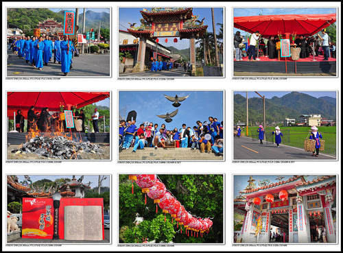
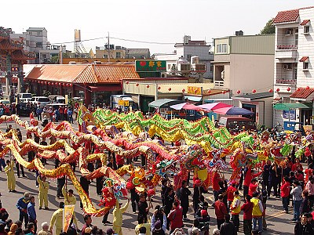
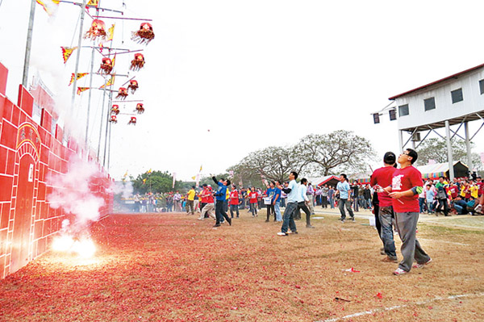

迎聖蹟．字紙祭

美濃的『送字紙、迎聖蹟』祭典是全台唯一，主要為祈求農作物豐作，為學童開啟智慧。
苗栗火旁龍

【火旁龍】為客語發音，也就是【炸龍】的意思。
是台灣客家族群每年於元宵節中重要的民俗活動，更保有傳統習俗及文化傳承的意涵
東勢新丁粄節

新丁粄」即為慶賀新添男丁的糯米糕點。故家裡前一年生有男丁的人，
在元宵節準備數十塊「紅粄」，到神廟謝神並祈福，祭拜後分享親友共沾喜氣。
祈福尖炮城

「祈福」與「還福」是客家人敬天謝土的單純與虔誠，
祭典保留「攻炮城」活動，完整地呈現了六堆地區的祭祀文化。
客家山歌藝術節
「天穿日」是「天穿地漏」的日子，即使再努力賺得都將自然流失，遂衍生當日放假唱山歌自娛娛人的習俗。
因此每年的這一天，許多客家鄉鎮會舉辦山歌比賽，尤以「竹東鎮」歷史最為悠久隆重盛大。
客家桐花祭
行政院客家委員會每年都會舉辦「桐花文化」相關活動，
在這樣的自然美景中，使賞遊者能重新認識客家山林文化，以及人文歷史之美。
三義雲火龍節
龍身插滿香由稻桿及竹片編織成草龍，又稱「香火龍」，
當地農民將香火龍放在重要路口，祈求四境平安，有遶境平安防疫及病害之意。
桐舟共渡歸鄉文化季
桃園縣特殊的陂塘地理景觀聞名各地，龍潭客家人常在龍潭大池舉辦龍舟賽，
並結合神農祭、水神祭等傳統節慶，成為地方上的一大盛事。
客鼓鳴心-鼓王爭霸戰
透過鼓王爭霸戰，喚起後山居民對鑼鼓喧天的記憶，
並搭配社區靚染工坊所推動的客家靚染技藝，重拾客家歲月風華。
全國義民祭
新埔枋寮褒忠義民廟是台灣首屈一指的義民廟，也是竹塹地區客家人的信仰中心，
並結合義民廟及輪值祭典區共同舉辦一連串盛大祭典活動。
平鎮客家踩街嘉年華會
「神巡平鎮」各大寺廟聯合遶境打破「角頭」寺廟藩籬，聯合各大寺廟又請出主祀神明參與遶境，
堪稱全台僅有，為全台319鄉鎮首創。創意踩街活動，邀請各社區民間團體以車隊遊街及團體步行方式踩街，
參與隊伍均以客家文化為主的表演設計，令現場民眾為之瘋狂，也引起熱烈迴響。
六堆嘉年華
是客家社會中非常特殊的活動。由行政院客家委員會指導，高雄縣、屏東縣六堆地區共襄盛舉，
結合文化產業活動、客家特色商品展售及嘉年華之夜等活動，目的是彰顯六堆在地文化產業特色
國際花鼓藝術節
國際花鼓藝術節以集結台灣各地客家族群中逐漸失傳的收冬戲碼、各式藝陣與戲團為演出的主題，
以期重溫客家收冬戲喧嘩熱鬧的光景。
客家傳統戲曲收冬戲
農民們在春天祈求天地諸神，雨水充足，作物豐收；
到了農曆十月入秋採收之後，客家人會舉辦酬神慶收冬活動，報答眾神的庇佑，
除了要準備豐富的祭品祭祀諸神，以表隆重之外，更請野臺戲到神明面前獻演，以示酬謝之意。